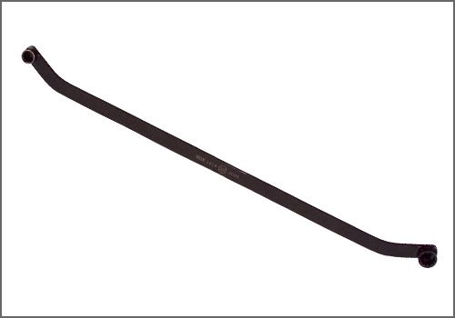
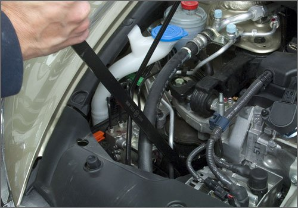

Electrical / Mechanical Repair


Honda Serpentine Belt Wrench
AST tool# HON1419
-Lightweight and slim design
-Equipped with 14mm and 19mm, 12 point securing attachments
-Works on most Honda applications
Contact AST for pricing
Assenmacher Specialty Tools
1 800 525 2943